Om mig
Detta är mitt arbete inom digital visualiering, fotografi och fotogrammetri åren 2025 och 2026. Just nu letar jag efter fler möjligheter att utveckla mina färdigheter inom dessa områden.
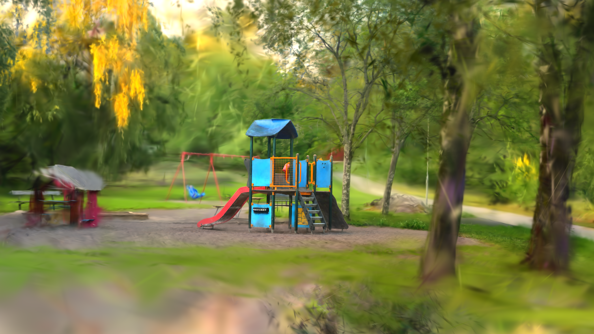
Bakgrund
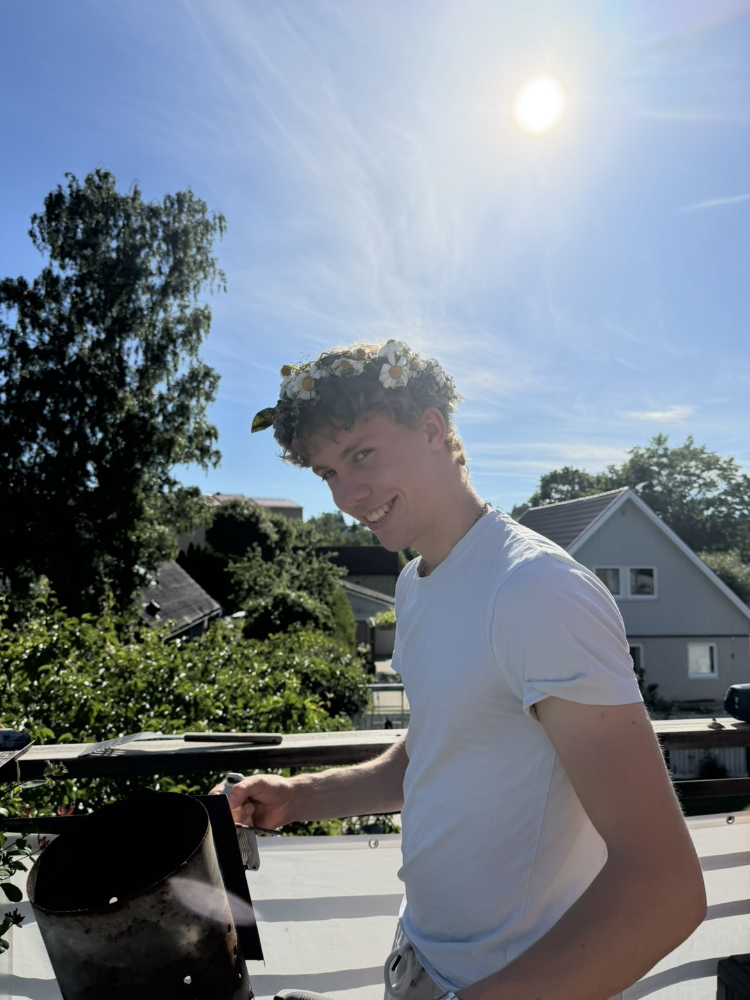
Parallellt med mina studier har jag byggt upp erfarenhet inom olika typer av media. Som 3D-grafiker arbetar jag främst med modellering, visualisering och rendering av digitala tvillingar — ett exempel är ett av mina senaste arbeten, en omfattande visualisering åt Renta Maskinuthyrning. Jag arbetar även med foto- och videoproduktion av sportevenemang genom BCK Media, och har erfarenhet av GIS och geografisk analys genom studier i ArcGIS.
Utöver de tekniska projekten har jag arbetat i serviceyrken och haft flera ledarroller — bland annat som fönsterputsare på Hemfrid, och som tränare och ledare inom Järfällagymnasterna
Jag trivs i roller där teknik, struktur och problemlösning kombineras med praktiskt arbete och samarbete. Mitt mål är att fortsätta utvecklas inom digital visualisering och samhällsbyggnad, och bidra till projekt där tekniska lösningar skapar konkret nytta.
Arbeten
2024
Digital tvilling av Gymnastikhall
Järfällagymnasterna
Fotorealistisk 3D-visualisering av JG-hallen, där hela interiören modellerades, texturerades, ljussattes och animerades i Blender. Modellen spelas idag på skärmar i hallen.
2025
Visualisering av klocka
Ozia Watches
3D-Visualisering av klockor för det nystartade företaget Ozia Watches. Materialet användes i marknadsföring och produktpresentation.
2025
Foto Rikstrean
BCK Media
Fotoförsäljning på gymnastiktävlingen Riksfyran i Järfälla. Bilder såldes i paket till klubbarna
2026
Lokalplanering med digital tvilling i Järfälla
Renta Maskinuthyrning Järfälla
Stor skalenlig visualisering av en industrilokal i första skedet av inredning inför inflytt.
2026
Foto Studentfirande Fridegårdsgymnasiet
BCK Media
Foto och bildförsäljning för BCK Media på Fridegårdsgymnasiets studentfirande.
2026
Foto Sinclairs Stockholm
BCK Media
Fotoförsäljning för BCK Media på dansuppvisningen Sinclairs på Stockholm Statsteater.
2026
Verktyg för nerfbaserad fotogrammetri
Ingen kund än så länge
Utveckling av ett verktyg för automatisk 3D-scanning för digitaliering av miljöer inne och ute. Jag planerar att använda verktyget för att underlätta planering vid byggprojekt i Järfälla.
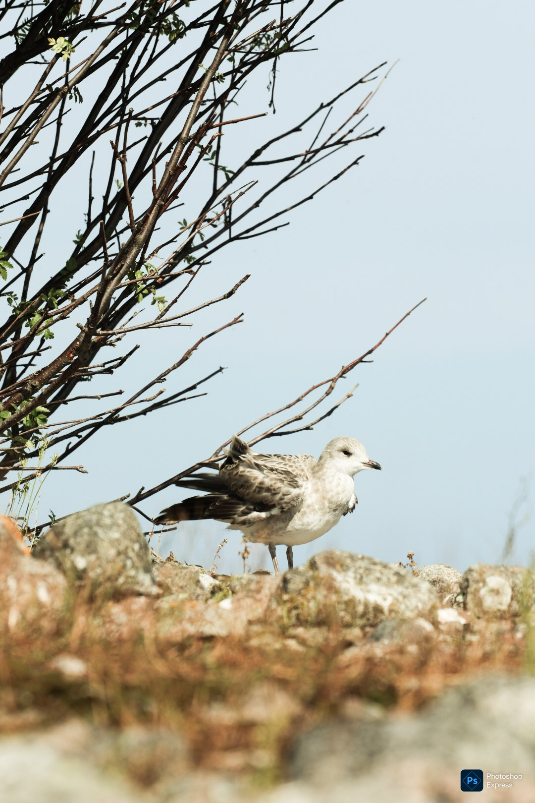
Selected images
Photograph
into my world
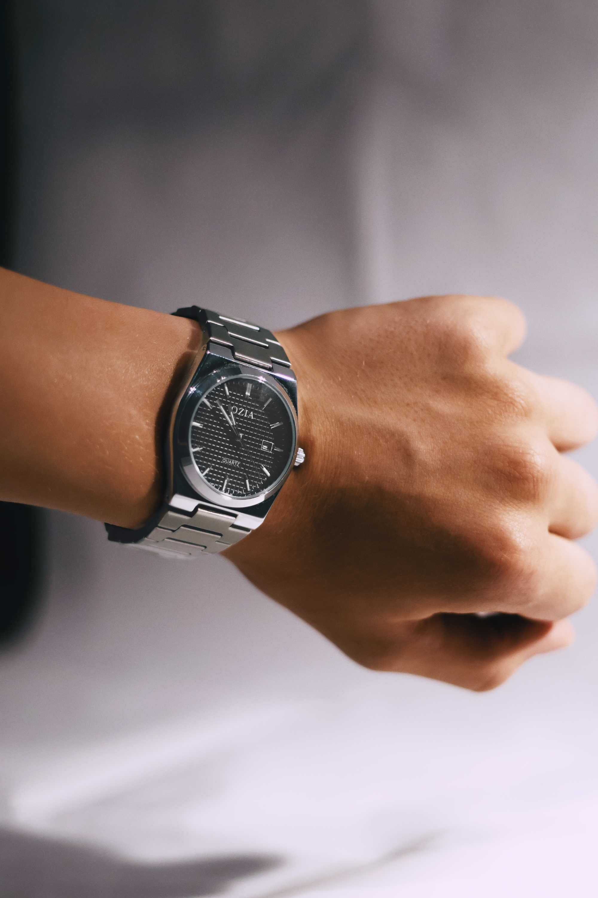
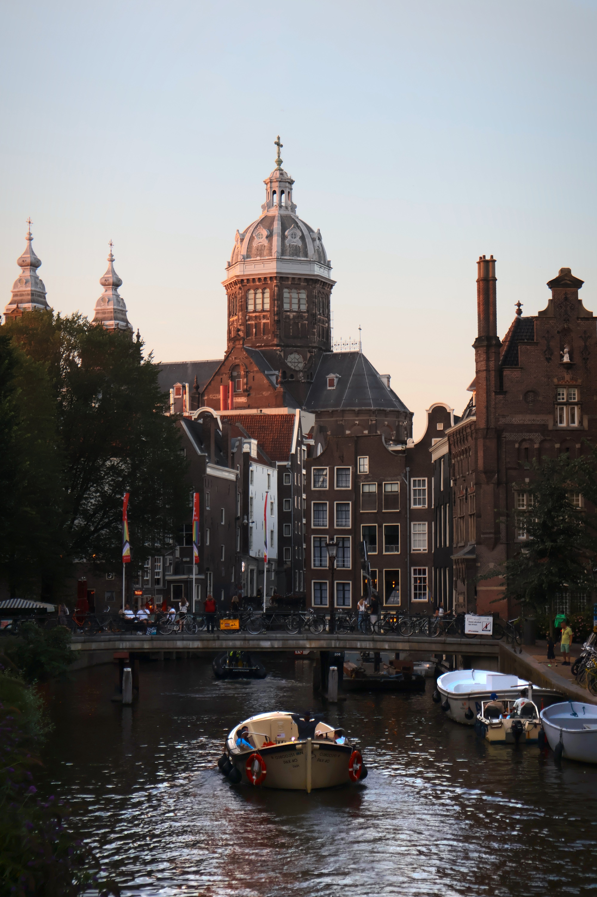
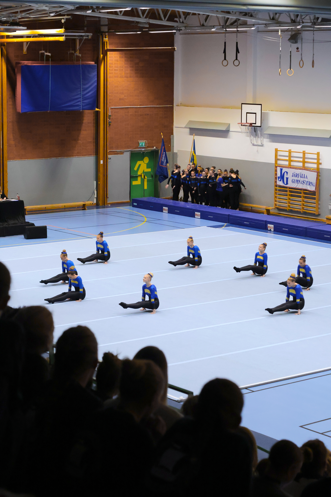
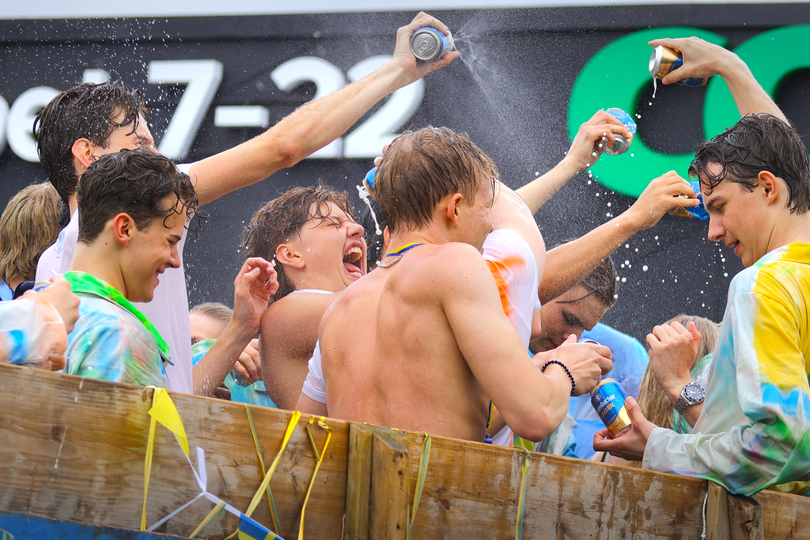
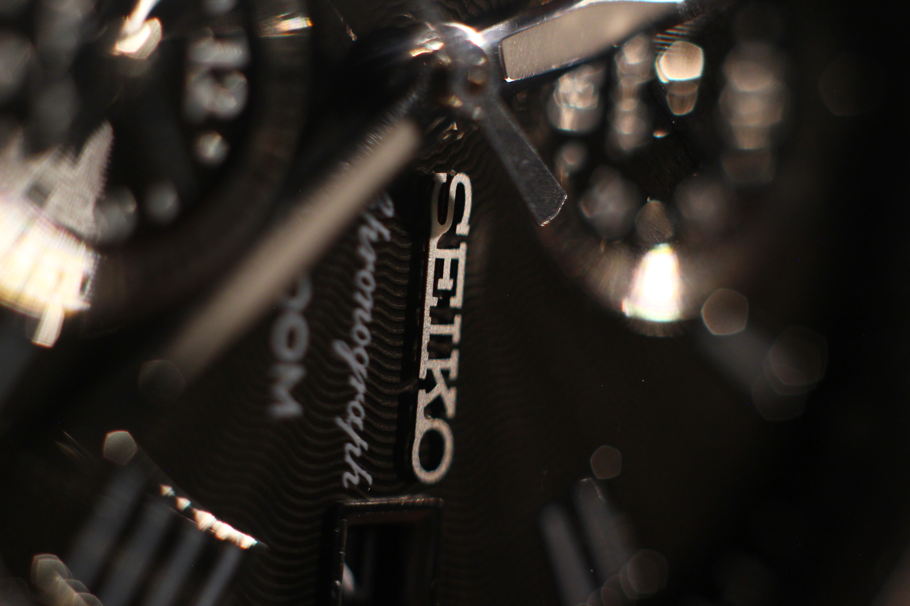
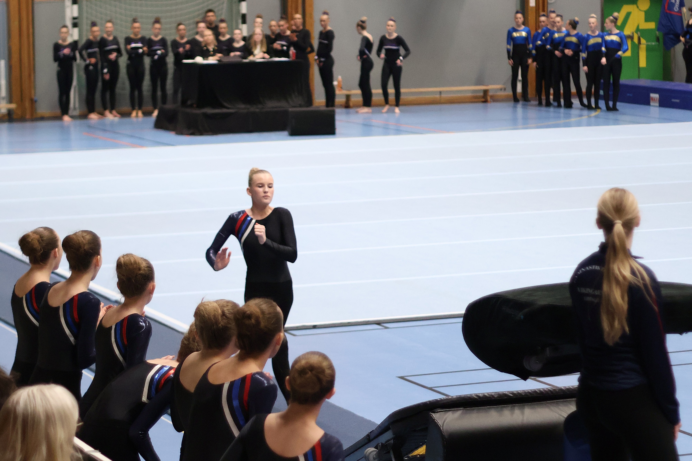
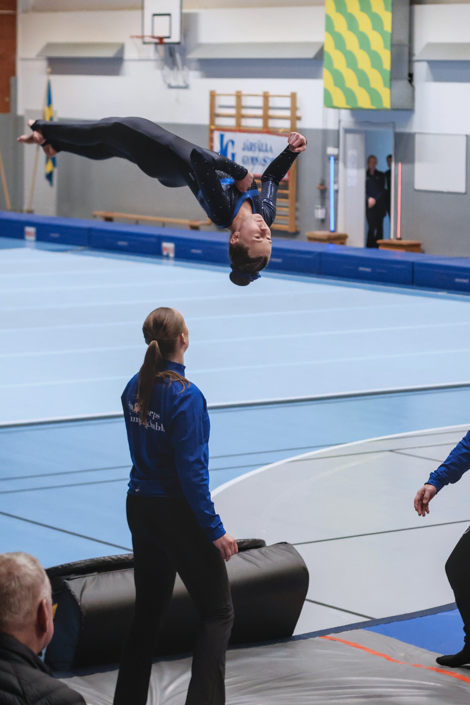
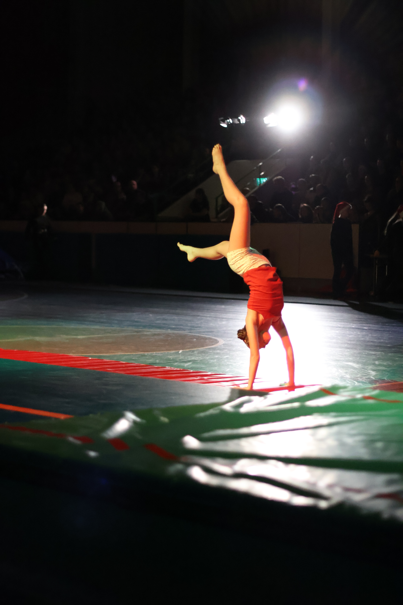
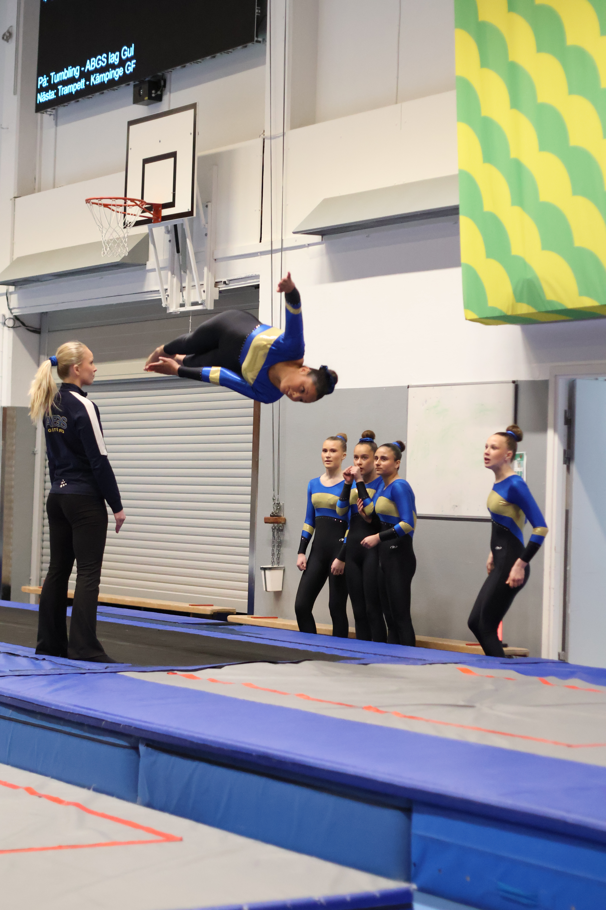